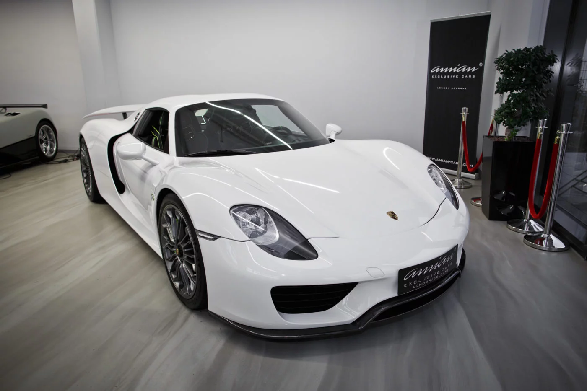

El Porsche 918 Spyder nació como un proyecto de Porsche, una marca alemana reconocida por sus autos deportivos de lujo, con el objetivo de combinar potencia, velocidad y tecnología ecológica. Su prototipo fue presentado en el Salón del Automóvil de Ginebra en 2010 y, posteriormente, la versión de producción se mostró en 2013. Este superdeportivo híbrido combina un motor V8 de gasolina con dos motores eléctricos, alcanzando una potencia total de 887 caballos de fuerza.
Su fabricación se realizó entre 2013 y 2015, con una producción limitada a solo 918 unidades, convirtiéndose en uno de los modelos más emblemáticos de la marca por su innovación, diseño y rendimiento.
La historia del Porsche 918 Spyder comenzó en 2010, cuando la marca alemana Porsche presentó su prototipo en el Salón del Automóvil de Ginebra, con la idea de crear un superdeportivo que combinara la velocidad de un auto de carreras con una tecnología más eficiente. Gracias a la buena acogida del público, su producción fue aprobada ese mismo año y el modelo definitivo se presentó en 2013.
Equipado con un motor V8 y dos motores eléctricos, alcanzaba una potencia combinada de 887 caballos de fuerza. Entre 2013 y 2015 se fabricaron únicamente 918 unidades, lo que lo convirtió en un automóvil exclusivo y en un referente de la innovación tecnológica de Porsche.
El Porsche 918 Spyder marcó un antes y un después en la historia de los superdeportivos al demostrar que era posible combinar velocidad, potencia y eficiencia mediante la tecnología híbrida. Equipado con un motor V8 de 4.6 litros y dos motores eléctricos, alcanzaba una potencia de 887 caballos de fuerza y una velocidad máxima aproximada de 345 km/h. Su diseño aerodinámico, su carrocería ligera de fibra de carbono y sus avanzados sistemas tecnológicos lo convirtieron en un vehículo excepcional. Además, podía recorrer distancias cortas utilizando únicamente energía eléctrica, demostrando que la innovación también podía formar parte de los automóviles de alto rendimiento.
Su producción se realizó entre 2013 y 2015, con solo 918 unidades fabricadas en todo el mundo, lo que aumentó su exclusividad y valor entre los coleccionistas. El Porsche 918 Spyder se convirtió en un referente de la ingeniería automotriz y contribuyó al desarrollo de los superdeportivos híbridos modernos.
Aunque su fabricación terminó hace años, sigue siendo uno de los modelos más admirados de Porsche por su combinación de elegancia, tecnología y potencia. Su legado demuestra que un automóvil puede ofrecer un rendimiento extraordinario sin dejar de apostar por soluciones más eficientes e innovadoras.